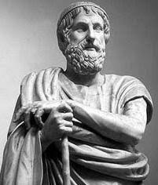
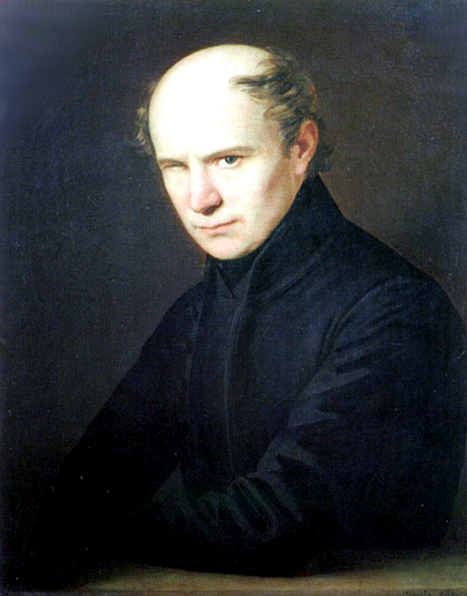

Iliász fordítása

KazyFerenc_
@valyi_nagy_ferenc4, Le tudnád fordítani az Iliászt? Kölcsey már dolgozott rajta egy keveset de nem szeretné befejezni, új embert keresünk erre a feladatra!
valyi_nagy_ferenc4
Szívesen folytatom
KazyFerenc_
Rendben! Áttudom küldeni Kölcsey részleges fordításait ha szeretnéd
valyi_nagy_ferenc4
Sokat segítene!
KazyFerenc_
Itt van: iliasz_reszleges.pdf
1826 április 12.

Klcsey__
@valyi_nagy_ferenc4, te most tényleg kinyomtadtad a pdf-et és kiadtad a saját neved alatt?
Ezt bárki meg tudta volna csinálni, nem erről volt szó!
valyi_nagy_ferenc4
Egy csomót tettem hozzá!
Klcsey__
Ez egyáltalán nem igaz,
Be foglak perelni, ez plágium!
Videóhívás
14 óra

KazyFerenc_
Ezen nem érdemes vitázni, mindegy ki fordította, az eredeti szerző így is @homerosz marad
@KazyFerenc_ el lett távolítva a csoportos beszélgetésből